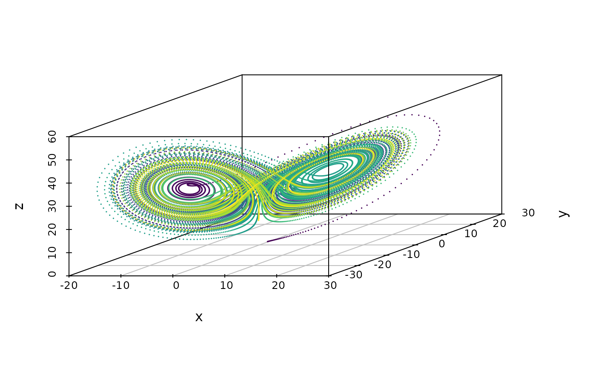

vignettes/ode.Rmd
ode.RmdMathematical and statistical software often relies on sequential computations. ordinary differential equations where numerical approximations are based on looping over the evolving time. When using high-level languages such as R calculations can be very slow unless the algorithms can be vectorized
There are various excellent (O)DE solvers (R: deSolve) Here I will illustrate the above techniques using the targeted R-package based on the target C++ library.
The ODE is specified using the specify_ode function
args(targeted::specify_ode)
#> function (code, fname = NULL, pname = c("dy", "x", "y", "p"))
#> NULLThe differential equations are here specified as a string containing the C++ code defining the differential equation via the code argument. The variable names are defined through the pname argument which defaults to
All variables are treated as armadillo vectors/matrices, arma::mat.
As an example, we can specify the simple differential equation \[y'(t) = y(t)-1\]
dy <- targeted::specify_ode("dy = y - 1;")This compiles the function and stores the pointer in the variable dy.
To solve the ODE we must then use the function solve_ode
The first argument is the external pointer, the second argument input is the input matrix (\(x(t)\) above), and the init argument is the vector of initial boundary conditions \(y(0)\). The argument par is the vector of parameters defining the ODE (\(p\)).
In this example the input variable does not depend on any exogenous variables so we only need to supply the time points, and the defined ODE does not depend on any parameters. To approximate the solution with initial condition \(y(0)=0\), we therefore run the following code
As a more interesting example consider the Lorenz Equations \[\frac{dx_{t}}{dt} = \sigma(y_{t}-x_{t})\] \[\frac{dy_{t}}{dt} = x_{t}(\rho-z_{t})-y_{t}\] \[\frac{dz_{t}}{dt} = x_{t}y_{t}-\beta z_{t}\]
we may define them as
library(targeted)
ode <- 'dy(0) = p(0)*(y(1)-y(0));
dy(1) = y(0)*(p(1)-y(2));
dy(2) = y(0)*y(1)-p(2)*y(2);'
f <- specify_ode(ode)With the choice of parameters given by \(\sigma=10, \rho=28, \beta=8/3\) and initial conditions \((x_0,y_0,z_0)=(1,1,1)\), we can calculate the solution
tt <- seq(0, 100, length.out=2e4)
y <- solve_ode(f, input=tt, init=c(1, 1, 1), par=c(10, 28, 8/3))
head(y)
#> [,1] [,2] [,3]
#> [1,] 1.000000 1.000000 1.0000000
#> [2,] 1.003322 1.135177 0.9920639
#> [3,] 1.013094 1.271279 0.9849468
#> [4,] 1.029068 1.409156 0.9786954
#> [5,] 1.051048 1.549630 0.9733721
#> [6,] 1.078888 1.693496 0.9690541
colnames(y) <- c("x","y","z")
scatterplot3d::scatterplot3d(y, cex.symbols=0.1, type='b',
color=viridisLite::viridis(nrow(y)))
To illustrate the use of exogenous inputs, consider the following simulated data
n <- 1e4
tt <- seq(0, 10, length.out=n) # Time
xx <- rep(0, n); xx[(n/3):(2*n/3)] <- 1 # Exogenous input, x(t)
input <- cbind(tt, xx)and the following ODE
\[y'(t) = \beta_{0} + \beta_{1}y(t) + \beta_{2}y(t)x(t) + \beta_{3}x(t)\cdot t\]
mod <- 'double t = x(0);
dy = p(0) + p(1)*y + p(2)*x(1)*y + p(3)*x(1)*t;'
dy <- specify_ode(mod)With \(y(0)=100\) and \(\beta_0=0, \beta_{1}=0.4, \beta_{2}=-0.5, \beta_{3}=-5\) we obtain the following solution
sessionInfo()
#> R version 4.3.2 (2023-10-31)
#> Platform: x86_64-pc-linux-gnu (64-bit)
#> Running under: Ubuntu 22.04.3 LTS
#>
#> Matrix products: default
#> BLAS: /usr/lib/x86_64-linux-gnu/openblas-pthread/libblas.so.3
#> LAPACK: /usr/lib/x86_64-linux-gnu/openblas-pthread/libopenblasp-r0.3.20.so; LAPACK version 3.10.0
#>
#> locale:
#> [1] LC_CTYPE=C.UTF-8 LC_NUMERIC=C LC_TIME=C.UTF-8
#> [4] LC_COLLATE=C.UTF-8 LC_MONETARY=C.UTF-8 LC_MESSAGES=C.UTF-8
#> [7] LC_PAPER=C.UTF-8 LC_NAME=C LC_ADDRESS=C
#> [10] LC_TELEPHONE=C LC_MEASUREMENT=C.UTF-8 LC_IDENTIFICATION=C
#>
#> time zone: UTC
#> tzcode source: system (glibc)
#>
#> attached base packages:
#> [1] stats graphics grDevices utils datasets methods base
#>
#> other attached packages:
#> [1] targeted_0.4 lava_1.7.3
#>
#> loaded via a namespace (and not attached):
#> [1] sass_0.4.8 future_1.33.0 futile.options_1.0.1
#> [4] stringi_1.8.2 lattice_0.21-9 pracma_2.4.4
#> [7] listenv_0.9.0 digest_0.6.33 magrittr_2.0.3
#> [10] evaluate_0.23 grid_4.3.2 fastmap_1.1.1
#> [13] rprojroot_2.0.4 jsonlite_1.8.8 Matrix_1.6-1.1
#> [16] survival_3.5-7 formatR_1.14 purrr_1.0.2
#> [19] viridisLite_0.4.2 codetools_0.2-19 numDeriv_2016.8-1.1
#> [22] textshaping_0.3.7 jquerylib_0.1.4 cli_3.6.1
#> [25] rlang_1.1.2 scatterplot3d_0.3-44 futile.logger_1.4.3
#> [28] parallelly_1.36.0 future.apply_1.11.0 splines_4.3.2
#> [31] RcppArmadillo_0.12.6.6.1 cachem_1.0.8 yaml_2.3.7
#> [34] tools_4.3.2 parallel_4.3.2 nloptr_2.0.3
#> [37] memoise_2.0.1 optimx_2023-10.21 lambda.r_1.2.4
#> [40] globals_0.16.2 vctrs_0.6.5 R6_2.5.1
#> [43] lifecycle_1.0.4 stringr_1.5.1 fs_1.6.3
#> [46] ragg_1.2.6 desc_1.4.2 pkgdown_2.0.7
#> [49] bslib_0.6.1 glue_1.6.2 data.table_1.14.8
#> [52] Rcpp_1.0.11 systemfonts_1.0.5 highr_0.10
#> [55] xfun_0.41 knitr_1.45 htmltools_0.5.7
#> [58] rmarkdown_2.25 compiler_4.3.2